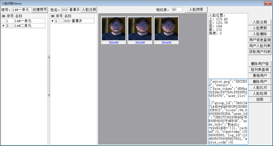
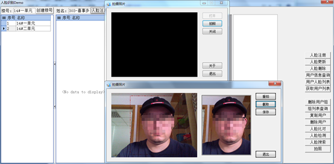
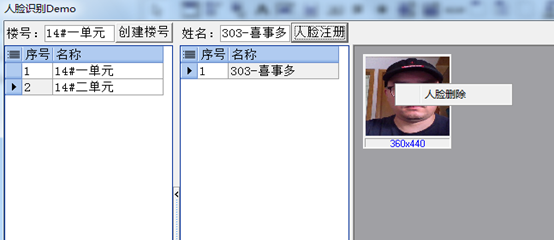
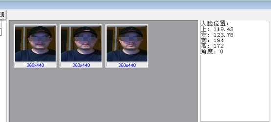
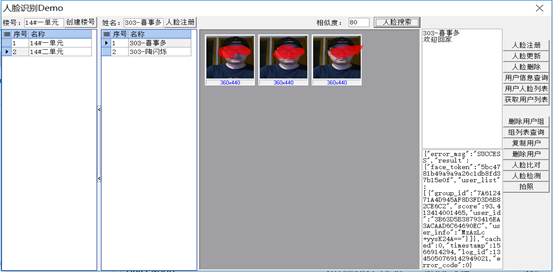

★、本实例使用百度智能云-人工智能-人脸识别API实现。
★、楼下安装了刷脸进门。闲暇时无聊写了个Demo
主界面显示如下图：

本实例，包括了所有人脸识别API的调用。
1、 创建楼号，对应API中创建用户组，详见：
https://ai.baidu.com/docs#/Face-Set-V3/5867daad
2、 右键删除楼号，对应API中删除用户组，详见：
https://ai.baidu.com/docs#/Face-Set-V3/24e7452a
3、 人脸注册，根据姓名注册人人脸信息并采集一次人脸信息。

4、 选中人员右键人脸采集，可以对用户继续采集人脸信息。删除人员，直接删除当前用户。同时删除所有人脸信息。人脸采集，删除人员分别对应API人脸注册，删除用户。
https://ai.baidu.com/docs#/Face-Set-V3/8bea9967
https://ai.baidu.com/docs#/Face-Set-V3/95b207bf
5、 选中图片右键人脸删除，删除当前用户下的一张人脸信息。如果只有一张人脸信息，同时删除用户。

6、 鼠标移动到图片上，显示图片中的人脸位置信息。

7、 人脸搜索，会实时拍摄一张照片进行匹配，然后进行判断。匹配阀值建议设置为80。即相似度超过80，判断为该人员。阀值越大，越精确,也容易出现误差，找不到人。搜索成功提示欢迎回家

8、其它API就不一一解释了。